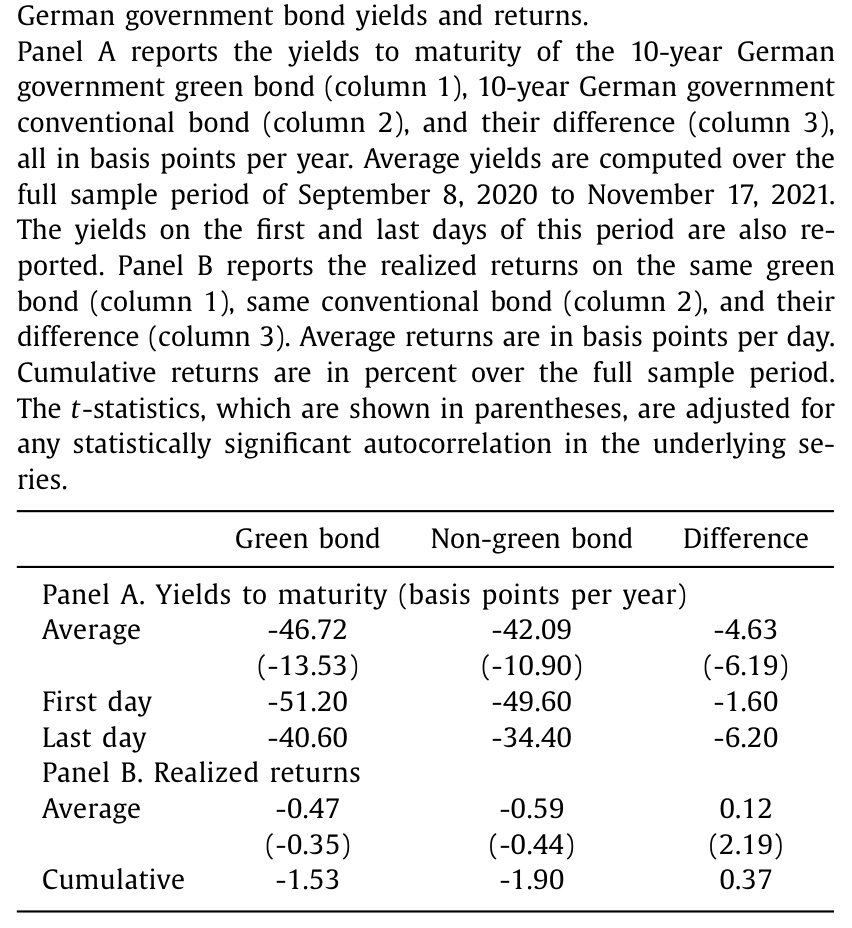
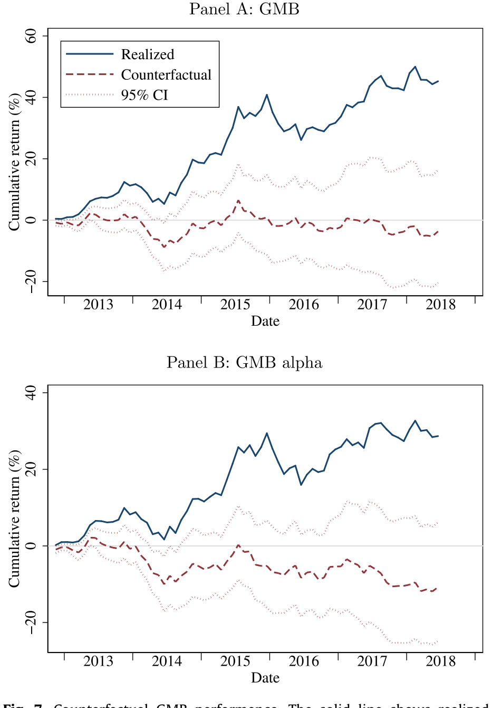
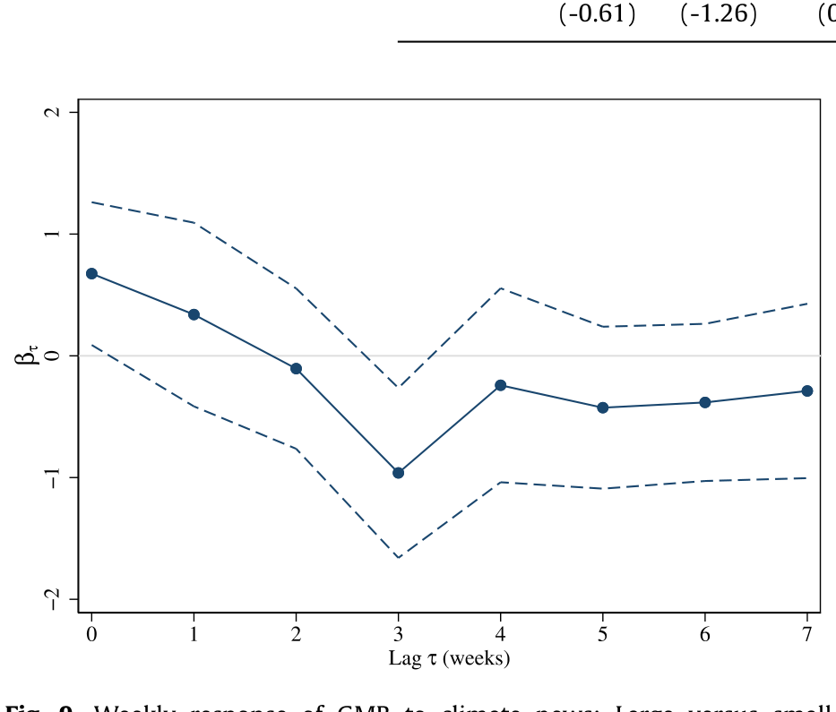
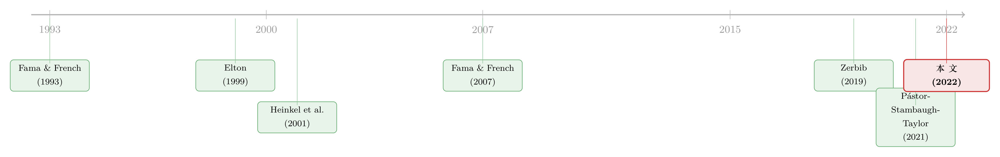

绿色资产涨得越好，越不该期待它继续涨
本文读的是 Pástor, Stambaugh & Taylor (2022, JFE)：过去十年绿色资产（green assets）跑赢棕色（brown）资产，靠的不是更高的预期收益，而是气候关切意外走强带来的一次性重估。把这些意外冲击从已实现收益里「减掉」之后，绿色股票的预期收益其实低于棕色——和理论一致。换句话说，涨得越猛，越是该警惕，而不是该追。
1 一个让人不安的事实
先看一个数字。从 2012 年 11 月到 2020 年 12 月，美国股市里「最绿」的那三分之一股票，累计跑赢「最棕」的三分之一达 174%。作者把这条多空价差叫做 GMB（green-minus-brown，绿减棕），它在这段牛市里的月度夏普比率（Sharpe ratio）是 0.33——比同期整个股票市场的夏普比率还要高。
绿色，在这十年里是一门好生意。
于是一个再自然不过的推论冒了出来：既然绿色资产过去赚得多，那它未来是不是也该有更高的预期收益？资产管理公司正是这么向客户兜售可持续产品的——把历史业绩摆出来，暗示「绿色 = alpha」。
本文的回答干脆利落：不。 而且恰恰相反。
监管要求每一只基金都得在广告里写上「过往业绩不代表未来表现」。作者想说的是：投资绿色资产时，这句免责声明尤其要当真——因为绿色的历史高收益，本质上是一次没法重演的意外。
这篇文章的全部张力，就压在一个被很多人混为一谈的区分上：已实现收益（realized return）≠ 预期收益（expected return）。这个区分听起来像教科书里的废话，但作者花了整整一篇 JFE 去证明，正是它解释了绿色资产的全部故事。怎么把这两者掰开？我们从一个干净得近乎完美的小案例讲起。
2 先看债券：一对德国「孪生国债」
股票的预期收益出了名地难估。但债券不一样——债券的预期收益和到期收益率（yield to maturity）紧紧绑在一起，而收益率是直接可观测的。所以作者的第一步，不是冲进股市，而是先去债市找一个看得最清楚的样本。
这个样本就是德国的「孪生债券（twin bonds）」。从 2020 年起，德国政府开始发行绿色国债，同时配一只几乎完全相同的非绿色「孪生兄弟」：同一个发行人、同样的到期日、同样的票息、同样的付息日。两只债的现金流和信用风险一模一样，唯一的区别就是「绿不绿」。这是一个近乎实验室级别的对照组。
那么，市场给「绿」这个标签定了什么价？答案是：绿色债券的收益率更低。两者收益率之差——也就是大名鼎鼎的「绿色溢价（greenium）」——在样本里始终为负，平均 -4.6 bps，多数时候落在 -7 到 -2 bps 之间。

Table 1
收益率更低，意味着什么？意味着持有到期的投资者，从绿色债券上预期赚得更少。这正是理论预言的：投资者愿意为「持有更符合自己环境价值观的资产」而接受更低的回报。
但接着，一个让人困惑的事实出现了：在这段样本里，绿色债券的已实现回报反而更高。多空组合（做多绿债、做空非绿孪生债）的日均回报是 0.12 bps（t = 2.19），累计 37 bps，相对于德国国债那点可怜的收益率已经相当可观。
预期收益更低，已实现收益却更高——这不是自相矛盾吗？
不矛盾。秘密藏在绿色溢价的变化里：从 2020 年 9 月到 2021 年 11 月，10 年期绿色溢价从 -1.6 bps 一路加深到 -6.2 bps，差不多翻了四倍。溢价越来越负，意味着绿债价格相对非绿债被越抬越高——而这个「抬」的过程，恰恰给持有者带来了意外的资本利得。
把这事翻译成一句话：预期收益是负的，但意外的「重估」把已实现收益顶成了正的。 而重估一旦发生，绿色溢价就已经更负了——它只会让未来的预期收益更低，绝不是更高。涨完之后，前方的路反而更陡峭了。（关于德国孪生国债里「绿色溢价」的另一种拆法，可参见《绿色溢价真的归零了吗？》。）
债券的案例干净归干净，毕竟只是一个 case study。真正的考验，是把同样的逻辑搬到那个预期收益「看不见摸不着」的地方——股市。
3 把「绿」装进股票，再把意外「减」出去
要在股市里复刻这套逻辑，第一步得先量化每只股票有多「绿」。作者用的是 MSCI ESG Ratings 的环境评分（它是被大量学术研究使用的 MSCI KLD 数据的继任者）。选 MSCI 的理由很实在：它是全球最大的 ESG 评级商，覆盖公司最多；而且 Berg et al.(2021) 发现，在八家 ESG 数据商里，MSCI 的评分噪声最小。样本从 2012 年 11 月（MSCI 覆盖面陡增的那个月）到 2020 年 12 月。
有了绿度，就能构造 GMB——做多最绿三分之一、做空最棕三分之一的价值加权组合。前面说过，它累计跑赢 174%。现在的核心问题是：这 174% 里，有多少是「预期收益」，有多少是「意外」？
这就是全文真正关键的一步。
作者的做法是：找一个能代表「气候关切（climate concerns）」的指标——他们用了 Ardia et al.(2021) 基于媒体文本构造的气候关切指数，这个指数在过去十年里翻了将近一倍——然后把 GMB 的已实现收益，对气候关切的冲击（shock）做回归。冲击为正，意味着关于气候变化的坏消息突然变多。
回归的结果非常清楚：气候关切冲击与 GMB 显著正相关。坏的气候消息一来，绿色股票就跑赢棕色——这和「绿色股票是更好的气候风险对冲工具」完全一致。
现在，魔法时刻到了。回归的截距——记作 \(\hat{a}\)——是把所有意外冲击都抹平之后剩下的部分，它正是对 GMB 预期收益的一个 ex post（事后）估计。而样本里的平均已实现收益 \(\bar{r}\)，按最小二乘的代数恒等式，可以拆成截距加上各个冲击的平均贡献：
这里 \(C\) 是气候关切冲击、\(E\) 是盈利冲击，\(\bar{C}、\bar{E}\) 是它们的样本均值（OLS 残差均值为零，所以这个等式严格成立）。这个看似平淡的恒等式，把「绿色为什么涨」一刀切成了三块：预期那一块（\(\hat{a}\)），加上两块意外（气候、盈利）。
那么，把意外这两块设成零，GMB 还剩下多少？这就是反事实（counterfactual）实验。
4 反事实：抹去意外，绿色股票其实在「亏」
作者做了一个直截了当的事：把气候冲击 \(C_t\) 设为零，重新算一遍 GMB 的累计表现。
结果令人印象深刻——曲线几乎走平。也就是说，如果没有气候关切的意外走强，绿色股票根本不会跑赢棕色。

Figure 7: Counterfactual GMB performance. The solid line shows realized
更进一步：如果把气候冲击和盈利冲击两块意外都设为零，GMB 的反事实表现变成轻微为负——这意味着 GMB 的预期收益其实是负的。绿色股票的预期收益，低于棕色股票。
如表 7（即图 7）所示，那条高歌猛进的实线（已实现），一旦抽掉意外，就瘫成了贴地的虚线。174% 的辉煌，几乎全部来自一次没法重演的、对气候关切的集体重新定价。
这个结论和债券案例严丝合缝：预期收益是负的，已实现收益却是正的，中间隔着的就是那道「意外」的楔子。 不同的是，债券那道楔子叫「绿色溢价加深」，股票这道楔子叫「气候关切意外走强」——同一个机制的两副面孔。
作者还用个股层面的面板回归（panel regression）做了平行验证，结论一脉相承：横截面上绿度与收益正相关；可一旦把绿度与气候冲击交乘项放进去，这个正相关就消失了——说明气候冲击完全吞掉了绿色股票的超额表现；再加上盈利冲击作为控制，关系甚至翻成微负。
5 那么，预期收益到底是多少？两条路殊途同归
光说「预期收益低」还不够，作者给了两条独立的估计路径，互为印证。
第一条是 ex ante（事前）路径。 既然预期收益难直接观测，那就用隐含资本成本（implied cost of capital, ICC）当代理变量——这是会计与金融文献里估计「市场要求的预期回报」的标准工具。作者定义了一个股票版的「绿色溢价」，叫股权绿色溢价（equity greenium），就是绿色股票与棕色股票预期收益之差（也即 GMB 的预期收益）。结果：整个样本期里，股权绿色溢价始终为负，而且在样本后半段进一步走阔——和「投资者对绿色资产的需求在不断强化」完全吻合。
第二条就是上一节的 ex post 路径——把意外冲击从已实现收益里清洗掉，得到的 \(\hat{a}\) 同样指向一个低（甚至负）的预期收益。
两条路，一个事前看价格、一个事后清洗收益，落点一致：绿色股票的预期收益更低。 这正是 PST（Pástor, Stambaugh, Taylor, 2021）均衡模型的预言——绿色资产预期收益低，既因为投资者有「绿色偏好（green tastes）」（一个 taste premium），也因为绿色资产是更好的气候风险对冲（一个 risk premium）。本文不是在检验一个新模型，而是在用数据，给 PST 的理论补上最关键的一块经验证据。（关于「预期收益」与「已实现收益」的这条分野为什么是资产定价的中心议题，可参见《贴现率：资产定价的中心议题》。）
6 一个意外发现：小盘股「慢半拍」
故事到这里其实已经完整了，但作者顺手挖出一个有意思的细节：小盘股对气候新闻反应迟钝。
在个股回归里，上个月的气候冲击比当月冲击进得更强，暗示部分股票存在延迟反应。GMB 本身（多空两腿都市值加权，由大盘主导）没有明显延迟；但当作者在大盘、小盘两个子样本里分别复制 GMB 时，差别就出来了：小盘 GMB 主要对上个月的气候冲击有反应，大盘 GMB 则主要对当月冲击反应。
放到周度频率上看得更清楚（如图 9 所示）：大盘 GMB 在当周和上周对气候新闻反应最强，小盘 GMB 则在更长的滞后——尤其是三周前的冲击——才反应过来。

Figure 9: Weekly response of GMB to climate news: Large versus small
这和「小股票对消息的反应一向更慢」的老结论一致（Lo and MacKinlay, 1990），也和 Hong et al.(2019) 关于股价对气候风险反应迟缓的发现互为补充。它甚至暗示市场并非完全有效——尽管本文整体是站在 PST 的有效市场视角上讲故事的。
7 顺便，解释了 value 为什么这么惨
绿色股票的故事，还意外地照亮了另一桩公案：2010 年代是 Fama-French 的 HML（高减低账面市值比）因子有记录以来最差的十年。价值投资者亏到怀疑人生。为什么？
作者借用 PST 的理论结果——资产由一个两因子模型定价，两个因子是市场组合和 ESG 因子。聚焦其中的「E」，他们按 PST 的方法构造了一个「绿色因子（green factor）」：按绿度加权做多绿、做空棕。
然后见证一下数字的力量：2012 年 11 月到 2020 年 12 月，HML 的月度 CAPM alpha 是勉强显著的 -71 bps；可一旦把绿色因子加进来，HML 的两因子 alpha 就变成不显著的 -15 bps。换句话说，价值股的惨淡表现，很大程度上是因为它们大多是「棕色」的——成长股偏绿、价值股偏棕，绿色一涨，价值自然就被压住了。绿色因子与 HML 显著负相关，正是这个道理。
不止 value。动量（momentum）同期的月度 CAPM alpha 是 66 bps，两因子 alpha 则降到 -6 bps——两因子模型把动量的超额表现也一并解释掉了。
一个诚实的边角：作者也承认，两因子模型解释 HML「跑输」的程度，要好过三因子模型解释绿色因子「跑赢」的程度——绿色因子相对 Fama-French 三因子的 alpha 仍有显著的 38 bps。所以这不是说绿色因子已经被完美定价，只是说它确实在为 value 的衰落「背锅」。
8 文献脉络
这条研究的根，扎在两处。
一处是「已实现 ≠ 预期」这个老母题。Elton (1999) 早就警告过：拿已实现收益当预期收益来做资产定价检验，是会出大错的。Fama and French (2002) 用它重估股权溢价，Pástor and Stambaugh (2001, 2009) 把它推进到结构性断点与「带不完美预测变量的预测系统」。本文是这条线在「绿色资产」上的一次漂亮应用——而且因为有了债券这个干净样本，那道「已实现与预期之间的楔子」被看得前所未有地清楚。
另一处是「偏好驱动的资产定价」。Fama and French (2007) 把「口味（tastes）」正式写进资产价格；Heinkel, Kraus, Zechner (2001) 更早地论证了绿色投资如何改变企业行为。沿着这条线，一批含「绿色偏好」的均衡模型涌现：PST (2021)、Pedersen, Fitzgibbons & Pomorski (2021)、以及 Baker et al.(2018) 等。本文的理论锚点是 PST。

与此同时，一大批经验研究在量「绿 vs 棕」的收益：事前路径上有 Baker et al.(2018)、Zerbib (2019)、Larcker and Watts (2020) 看绿色债券收益率，Chava (2014)、El Ghoul et al.(2011) 比隐含资本成本；事后路径上有 Bolton and Kacperczyk (2021, 2022)、Hsu et al.(2022) 等量已实现收益。本文的独特之处，是同时做事前与事后，并把全部火力对准「预期 vs 已实现」这道分野，用气候冲击把已实现收益里的「意外」精确地清洗出去。（关于 ESG 持仓与信念的另一组事实，可参见《投资者并不相信 ESG 能赚钱，却仍有人重仓》、《三万五千亿美元的 ESG，到底「倾斜」了多少？》。）
9 评论与延伸（Q&A + 研究方向）
(a) 几个可能的疑问
Q：「已实现收益高，预期收益却低」这话听起来像诡辩，怎么可能两者反向？
一点都不诡辩，债券例子就是铁证。持有到期的绿债，预期回报确定地低于非绿孪生债（因为它收益率更低、现金流又完全一样）。但如果在持有期里绿色溢价意外加深、绿债价格被抬高，已实现回报就会高。预期是「事前的、确定的」，已实现是「事后的、含意外的」，两者之间隔着一笔没法预测的重估——方向可以完全相反。
Q：会不会是 MSCI 评分太烂，整个结论建在沙子上？
作者特意挑了 MSCI，正因为 Berg et al.(2021) 发现它在八家数据商里噪声最小，覆盖也最广。当然 ESG 评分的分歧是个真问题，但用噪声最小的那家，已经是当下能做的最稳妥选择。结论的可信度，更多依赖气候冲击与 GMB 的稳健正相关，而非某一只股票的精确绿度。
Q：把气候冲击「设为零」算反事实，会不会太随意——万一气候冲击和别的东西混在一起？
这是最该担心的地方。作者用盈利冲击做了第二重清洗：连盈利意外一起抹掉后，GMB 反事实变微负，结论方向不变，说明不是盈利在偷偷驱动。但气候关切指数本身是媒体文本构造的代理，它可能同时捕捉到宏观情绪、风险偏好的变化。识别的软肋就在这里——「气候冲击」是否纯净，决定了反事实有多可信。
Q：那 174% 是不是说明绿色投资其实是个「坑」？
不能这么说。作者的论点是关于预期收益，不是关于「该不该绿色投资」。预期收益低，恰恰意味着绿色公司的资本成本低——这对想通过压低绿色企业融资成本来产生现实影响的 ESG 投资者，反而是好消息。低收益是「影响力」的代价，不是失败的证据。（关于撤资/影响力投资到底有多大现实效果，可参见《卖掉一只「脏」股票，真能改变世界吗？》。）
Q：小盘股「慢半拍」会不会只是流动性噪声，而非真的反应迟缓？
有这个可能，但作者给的证据是结构化的：滞后期的系统性差异（小盘对三周前的冲击反应最强）很难用纯噪声解释，且与「小股票对各类消息一向反应慢」的既有文献（Lo and MacKinlay, 1990；Hong et al., 2019）吻合。不过这一块确实是全文里「市场有效性」立场最暧昧的地方。
Q：两因子能解释 HML，是不是意味着价值因子「死了」？
更准确的说法是：价值因子近十年的惨淡，被绿色因子吸收了一大半，因为价值股恰好偏棕。这不等于价值因子整体失效，而是说它近期的负 alpha 主要是「踩中了棕色这一脚」。一旦气候关切不再单调走强，这种压制就未必延续——所以作者反而认为价值股未来未必继续输。
(b) 几个可能的研究问题与提案
1. 把这套「清洗意外」搬到公司债的信用利差上。 - 【经济故事】股票的预期收益难估，公司债却有收益率——和德国国债一样，信用利差直接含预期收益信息。绿色公司债 vs 棕色公司债的利差里，有多少是「预期」，有多少是气候关切意外走强带来的重估？这能把本文的债券案例从「无违约风险的国债」推广到「有信用风险的公司债」。 - 【可行性】高。需要 TRACE 的公司债交易数据、Mergent FISD 的债券特征、再叠加发行人层面的 MSCI 环境评分，回归框架几乎可以直接照搬本文。识别上要小心绿/棕公司在久期、评级、行业上的系统性差异，可用孪生式匹配缓解。
2. 外资持有人是不是气候关切重估的边际定价者？ - 【经济故事】绿色偏好的强度因投资者类型而异。若某段时间的气候关切意外走强主要由外资（欧洲养老金、主权基金）需求驱动，那么外资持股高的绿色公司应在重估中涨得更猛。把「需求方异质性」拆进 GMB，能直接检验 PST 里「需求移动」的微观来源。 - 【可行性】中。需要 FactSet/Refinitiv 的机构持股（按地域分类）、外资持股份额，配合气候冲击交乘。难点是外资持股与公司绿度可能内生共变，需要外生的需求冲击（如某国养老金 ESG 强制令）做工具。
3. 流动性，是不是绿色溢价的另一条暗线？ - 【经济故事】德国财政署承诺为绿债做市，正是怕「绿债更不流动」污染绿色溢价。但在公司债与股票里，绿/棕资产的流动性差异无人替你抹平。若绿色资产系统性地更（或更不）流动，那本文测到的「绿色溢价」里就掺了一块流动性溢价。把流动性从绿色溢价里剥离，是个干净的实证题。 - 【可行性】高。股票用 Amihud、债券用换手率/价格冲击类指标，控制流动性后看股权绿色溢价是否还显著为负即可。（流动性度量本身的坑，可参见《把「成交价」从「成交量」里解放出来》。）
4. 反事实对「气候冲击代理变量」有多敏感？ - 【经济故事】本文反事实的全部重量压在 Ardia et al.(2021) 这一个媒体指数上。换成 Sautner et al.(2021) 的公司层面气候暴露、或 Engle et al.(2020) 的对冲组合，结论的量级会不会变？这是对识别稳健性的直接拷问，也是给「气候冲击怎么量」这个开放问题做一次横向比较。 - 【可行性】高。多个气候新闻/暴露指标已公开，把反事实在不同代理下重跑一遍即可，工程量小、价值清晰。
10 我的判断
这篇文章最大的贡献，是把一个被业界系统性误用的直觉——「过去涨得好 = 未来预期高」——用一个近乎实验室的债券案例 + 一套干净的「清洗意外」框架，彻底证伪了。它没有发明新模型，但它把 PST 的理论预言钉死在了数据上，而且钉得极其优雅：债券给你看清机制，股票给你看清规模，反事实给你看清「抽掉意外后什么都不剩」。对任何拿历史 ESG 业绩做营销的人，这是一记响亮的耳光。
对识别，我最大的保留在那个气候关切冲击上。整个反事实的可信度，取决于这个媒体指数是否真的只捕捉了「关切」、而没掺进风险偏好或宏观情绪的同期波动。作者用盈利冲击做了第二道清洗，方向稳健，但代理变量的纯度问题没法靠一个指标自证——这正是上面研究提案 4 想做的事。此外，样本止于 2020 年底，而 2021–2022 年绿色资产经历了显著回撤，正好是本文逻辑的「样本外检验」：如果气候关切见顶回落，GMB 理应转负。把样本延长，会是对这套框架最有力（也最危险）的一次压力测试。
我接下来最想看到的，是把这套「预期 vs 已实现」的清洗术，搬到公司债与外资持有人的交叉点上——那里既有可观测的收益率，又有清晰的需求方异质性，是检验「谁在为绿色重估买单」的最佳战场。
参考文献
- Ardia, D., Bluteau, K., Boudt, K., Inghelbrecht, K. (2021). Climate Change Concerns and the Performance of Green Versus Brown Stocks. Working paper, National Bank of Belgium.
- Baker, M., Bergstresser, D., Serafeim, G., Wurgler, J. (2018). Financing the Response to Climate Change: The Pricing and Ownership of U.S. Green Bonds. Working paper, Harvard University.
- Berg, F., Koelbel, J., Pavlova, A., Rigobon, R. (2021). ESG Confusion and Stock Returns: Tackling the Problem of Noise. Working paper, MIT.
- Bolton, P., Kacperczyk, M. (2021). Do investors care about carbon risk? Journal of Financial Economics 142, 517–549.
- Chava, S. (2014). Environmental externalities and cost of capital. Management Science 60, 2223–2247.
- Eccles, R., Stroehle, J. (2018). Exploring Social Origins in the Construction of ESG Measures. Working paper, University of Oxford.
- Elton, E. (1999). Expected return, realized return, and asset pricing tests. Journal of Finance 54, 1199–1220.
- Fama, E., French, K. (1993). Common risk factors in the returns on stocks and bonds. Journal of Financial Economics 33, 3–56.
- Fama, E., French, K. (2002). The equity premium. Journal of Finance 57, 637–659.
- Fama, E., French, K. (2007). Disagreement, tastes, and asset prices. Journal of Financial Economics 83, 667–689.
- Heinkel, R., Kraus, A., Zechner, J. (2001). The effect of green investment on corporate behavior. Journal of Financial and Quantitative Analysis 36, 431–449.
- Hong, H., Li, F., Xu, J. (2019). Climate risks and market efficiency. Journal of Econometrics 208, 265–281.
- Larcker, D., Watts, E. (2020). Where's the greenium? Journal of Accounting and Economics 69, 1–26.
- Lo, A., MacKinlay, C. (1990). When are contrarian profits due to stock market overreaction? Review of Financial Studies 3, 175–205.
- Pástor, L., Stambaugh, R. (2001). The equity premium and structural breaks. Journal of Finance 56, 1207–1239.
- Pástor, L., Stambaugh, R. (2009). Predictive systems: living with imperfect predictors. Journal of Finance 64, 1583–1628.
- Pástor, L., Stambaugh, R., Taylor, L. (2021). Sustainable investing in equilibrium. Journal of Financial Economics 142, 550–571.
- Pedersen, L., Fitzgibbons, S., Pomorski, L. (2021). Responsible investing: the ESG-efficient frontier. Journal of Financial Economics 142, 572–597.
- Zerbib, O. (2019). The effect of pro-environmental preferences on bond prices: evidence from green bonds. Journal of Banking and Finance 98, 39–60.